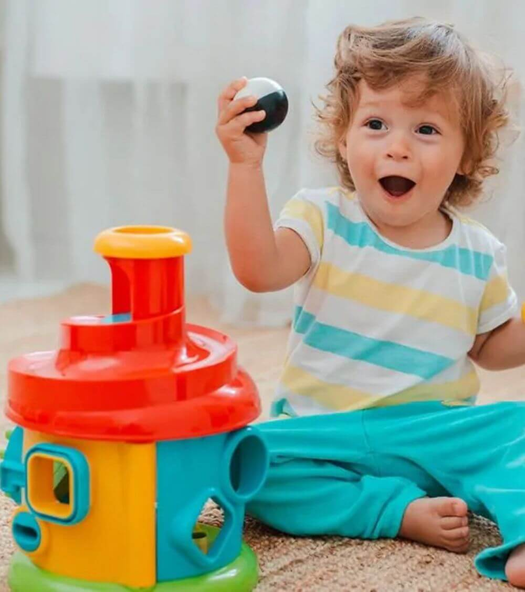

Állatasszisztált terápia
Az állatasszisztált terápia eredményességét az adja, hogy a kutya a csoport tagjait elfogadja olyannak, amilyenek, motiváló erőként bír a gyermekek számára. Velük együtt dolgozik, a gyerekek irányítják, feladatokat adnak neki. A foglalkozás Indie kutyával zajlik, aki fajtáját tekintve border collie.Főbb fejlesztési területek:
- szociális és kommunikációs készségek, társas helyzetek kezelése, kapcsolatteremtés
- szorongásoldás, stressz-és félelemcsökkentés
- érzelmek felismerése, kifejezése
- kognitív készségek
- pozitív önértékelés
Foglalkozást tartó gyógypedagógus: Korfanti Andrea
Autizmus specifikus fejlesztés
A foglalkozások autizmusbarát környezetben valósulnak meg, melynek elemei közé tartoznak például a strukturált tér-és idő, csak releváns ingerek jelenléte, valamint az egyénre szabott vizuális támogatások. A fejlesztés célja a társadalmi részvétel és az autonómia erősítése, valamint a szociális és kommunikációs képességek fejlesztése.Főbb fejlesztési területek:
- szociális készségek (részvétel, várakozás, szerepcsere…)
- kapcsolatteremtés, kommunikáció
- érzelmek felismerése, megfelelő kifejezése
- mentalizációs képesség
- társas helyzetek megértése
- viselkedési szabályok gyakorlása
- rugalmas viselkedésszervezés, gondolkodás
- alkalmazkodási képességek
Foglalkozást tartó gyógypedagógus: Bagyinszki Dalma
Komplex gyógypedagógiai fejlesztés
Az ellátás egy teljeskörű gyógypedagógiai állapotfelméréssel indul, mely során képet kapunk arról, hogy mely fejlődési területeket milyen mértékben és kombinációban szükséges előtérbe helyezni a foglalkozások során. A fejlesztés a gyermek egyéni igényeihez igazodva, változatos feladatokkal, játékos formában valósul meg. Célja a részképességek fejlesztése által a tanulási képességek minél jobb kibontakoztatása.Főbb fejlesztési területek:
- nagymozgás, finom-és grafomotorika
- vizuomotoros koordináció
- testséma
- orientációs készségek
- figyelem, koncentráció
- emlékezet
- beszédészlelés-és értés, kommunikáció
- ondolkodási funkciók
- vizuális és auditív észlelés, érzékelés
- olvasás, írás, helyesírás, matematikai készségek
- szociális készségek, érzelemszabályozás, önállóság
Foglalkozást tartó gyógypedagógusok: Bagyinszki Dalma, Korfanti Andrea
Iskola-előkészítő
A foglalkozás fő célja, hogy az óvoda és az iskola között átmenetet képezzen, biztosítsa a magabiztos iskolakezdést. A fejlesztés a gyermek egyéni igényeihez igazodva, változatos feladatokkal, játékos formában valósul meg. A kiscsoportos forma a sikeres iskolakezdéshez szükséges alapkészségek fejlesztése mellett lehetőséget ad a társas és kommunikációs készségek fejlődésére is.Főbb fejlesztési területek:
- nagymozgás, finom-és grafomotorika
- vizuomotoros koordináció
- testséma
- időbeli, térbeli és síkbeli tájékozódás
- figyelem, koncentráció
- emlékezet
- beszédészlelés-és értés, kommunikáció
- gondolkodási funkciók
- vizuális és auditív észlelés, érzékelés
- matematikai készségek
- szociális készségek
- feladattudat, feladattartás
Foglalkozást tartó gyógypedagógus: Bagyinszki Dalma